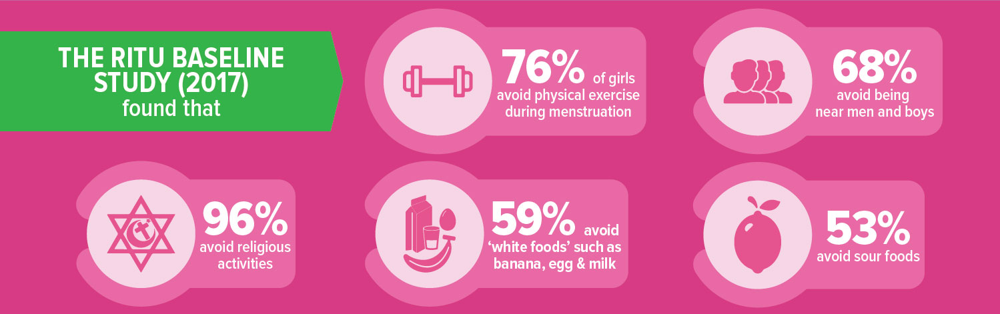
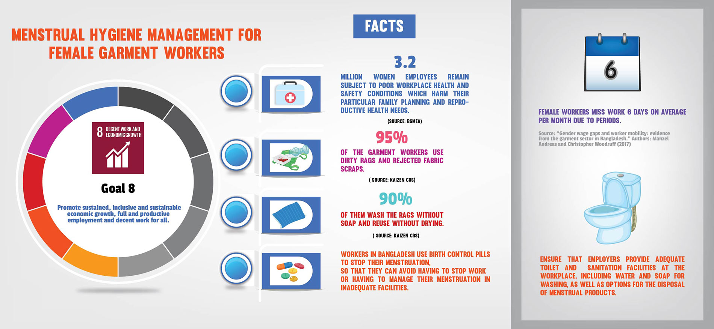

A joint initiative of 
A joint initiative of
While menstruation is a normal, natural process, in our country it is viewed as a thing to be hidden from the public eye. It is often seen as a monthly ‘disease’ that does not warrant any discussion or special focus. It is this attitude that leads to a lack of awareness about menstrual health and hygiene, thus resulting in poor menstrual practice that deeply affect women’s health and their participation in daily activities. Lack of proper public toilet facilities, affordable sanitary products and comprehensive knowledge on the subject has further compounded the problem of poor menstrual health and hygiene.
Fifteen-year-old Ayesha Akhter Urmi was in class 7 when she got her first periods. She was unaware of what to do; her mother and other female relatives had never explained anything about menstruation to her.
When she reached puberty, Urmi told her mother that she was menstruating. Her mother suggested that she use cloth napkins during her menstruating days. As Urmi was never informed about the do’s and don’ts of menstruation, and because of the uncomfortableness of cloth napkins, Urmi often feels embarrassed to attend school when she is menstruating, and as a result her school attendance suffers. She further adds that she feels the obsessive need to be clean and dry all the time, as she fears that if her dress gets stained, she will be bullied by her male peers.
According to Bangladesh National Health Baseline Survey (BNHBS) 2014, only six percent girls received Menstruation Hygiene Management (MHM) education at school. The study also indicates only 36 percent knew about MHM before menarche.
Though students learn about menstrual hygiene in their school, they often fail to understand the concept as the teachers just read the content out without explaining any of it to them. In most cases girls are often left to read biological information in textbooks by themselves.
Professor Abdul Mannan, Director (Secondary) of Directorate of Secondary and Higher Education, “The NCTB Board has organized several awareness programmes on menstruation health to train teachers and make students learn about menstruation. Moreover, teachers still feel reluctant to openly talk about menstruation in classrooms.”
Lack of knowledge about menstruation seriously disrupts girls’ regular activities during period.

“I don’t feel comfortable using the school’s washroom, which is used by both girls and boys. So, I try not to go to school on the first day of my monthly flows,” says Urmi, a student of Abdul Awal High School in Kamrangichar. Moreover, the sanitation facilities in her school is extremely poor, and the students have to hold their nose to block the stench when using the washroom.
Urmi’s case is not different from the other school going girls in the country. According to the Ritu Baseline Study 2017, in Bangladesh the toilet to schoolgirl ratio is 1:187 whilst the standard according to World Health Organization (WHO) is one toilet for 25 girls. The study also found that 32% of menstruating girls do not use the toilet at school during period.
Sumaiya Hasan, a ninth grader of the school shares that she finds it very difficult to handle menstruation flow when she is at school, as there is no disposable bin in the bathroom and the school authorities do not provide any sanitary napkins to the students.
In 2015, the Education Ministry instructed all schools to keep sanitary napkins for students at school premises. But the situation seems to have improved little on the ground.
Professor Abdul Mannan laments, “Many schools cannot afford sanitary napkins for their students. A government policy dictates that separate toilet facilities for male and female students should be implemented but many schools don’t follow that policy.”
Poor access to water and sanitation in schools seriously affect the academic performance of menstruating girls. According to the BNHBS 2014, 40% girls miss approximately three school-days during menstruation and one-third perceives that menstruation problems interfere with their school performance.
Working under a male supervisor makes it difficult for us to talk about our menstrual issues”, says Jhorna, a garment factory worker. “We need to work long hours in the factory. So if any girl takes a toilet break, the supervisor gets annoyed, arguing that it is a loss of time in production.
Speaking of ways to dispose menstrual waste, Jhorna says, “We need to work with thread and other textile materials which are available on the factory floors.” She adds, “No one disposes the napkins in the bathroom of the factory because the disposable bins do not have any covers. We do not have soaps in the factory to wash our hands. Also, we need to stand in long queues when we have to go to the bathroom.” The window and door locks are broken, and so, a female colleague has to assist from the outside by holding the door when another female worker is using the toilet, says Jhorna.
Female garment workers mostly use the spare fabrics found on the floor of the factories as sanitary protection. These spare fabrics, or textile waste, are usually dirty, moldy or have been infested by insects, thereby leading to infections and rashes which can have long term health effects.
A study conducted on 110 female workers aged 20 -24 (the largest demographic of the factory’s female workforce) at a garment factory has also found that 44 percent of the women complained of contracting a urinary tract infection (UTI). Moreover, according to “Gender Wage Gaps and Worker Mobility: Evidence from the Garment Sectory in Bangladesh” by Manzel Andreas and Christopher Woodruff, female garment workers are forced to miss around six days of work on average per month due to their monthly flow.
Moreover, despite global demands for improved worker safety post Rana Plaza, workplace health and safety conditions continue to be poor. Female garment workers, in particular, work in vulnerable, volatile environments with risks of sexual harassment, and lack of proper hygiene facilities like working toilets or sanitary menstruation management. This can severely impede their reproductive health and also impact their family planning, thereby negatively influencing their lives and social status.

Thirty-five-year old Jomila shares bathrooms with nine families in Moddhopara, Meradia.
“We have common toilets which are shared by both men and women. Everyday a woman is responsible for cleaning the toilets, and some of them are irresponsible and reluctant to clean it properly,” she says.
People living in slum areas are forced to depend on poorly maintained and overcrowded toilet facilities. With limited infrastructure, female slum dwellers have no way to escape their uncomfortable life, as every family have to share their toilet facilities with their neighbours.
The situation gets worse during monsoon when the alleys in slum areas are clogged with rain water and the dwellers have to walk down several steps to go to the toilet.
“The toilets are always too smelly and very difficult to use. With poor infrastructure, there is very little space in the toilet area and we need to wait in long queues to use it,” Jomila further states.
In poor urban settlements, women have to bring water from tube-wells which is far from the shanties.
In regards to hygiene practice of menstruation, Jomila says, “We dispose our menstrual napkins in a dustbin which we keep outside the room. A cleaner comes in the morning and takes the waste from each house.”
Due to lack of toilet facilities, women in slums who use cloth napkins during menstruation dispose them by covering it with other cloth and throw it in open lands with other domestic wastes.
Women with disabilities are more prone to infections as they are not able to manage their menstruation. Like any other woman, women with disabilities also need to frequently change their napkin. As they need to depend on others to assist them, they often fail to receive proper care.
Moreover, women with special needs are not supported with professional caregivers. In most cases, their caregivers are their mothers or sisters who are not provided with proper training to handle the menstruation flow of the disabled women.
Women with disabilities thus often struggle to stay productive during their monthly flow and are unable to do other social activities due to lack of sufficient support and services. Women with intellectual disabilities, in particularly, are unable to manage their toilet hygiene and need to depend on others.
“Those who are able to take care of their menstruation hygiene tend to change their sanitary napkins frequently. But the situation is different for women with disabilities. A woman using a wheelchair is forced to sit for long durations and might have heavy bleeding without realizing it, and later face other health issues,” says Sabrina Sultana, President of Bangladesh Society for the Change and Advocacy Nexus (B-Scan).
Sabrina further said that visually impaired women should get proper training to change their sanitary napkins.
Nigar Sultana Shumi, an employee of a private firm, says that it gets worse if any women with special needs is menstruating and has to go to a public toilet to change. “As wheelchair users, we cannot even enter public restrooms, as they have squat toilets which are not disable-friendly and there are no ramps to enter the restroom.”
With inadequate knowledge of menstrual hygiene, inability to afford sanitary napkins and unavailability of private toilets, women in rural settings are more prone to health hazards. In rural areas, women and girls cut old cloths for use as sanitary napkins. The poorly maintained cloths are washed to get rid of the stains and dried mostly on the windows of the bathrooms. Thanks to societal norms that view menstruation as unnatural, these rags are covered with other clothes, thus ensuring that they get little or no sunlight. Moreover, women will continue to use these rags till they become tattered, regardless of the health risks they pose.
Atia Nur Chowdhury, a volunteer campaigning under the banner of Project Konna on menstruation health in rural settings, says, “In rural areas, people have to use a common washroom outside their homes, and men and women have to share the same washroom.” This becomes more of a problem when women suffer from irregular periods, which seems to be the case for many women living in rural areas, says Atia. While campaigning, Atia further found that due to lack of awareness women in rural settings tend to take injections as birth control which hampers their menstruation cycle.
Lack of access to affordable sanitary napkins has kept many women from choosing them as an alternative to dirty rags. Thankfully, several companies are attempting to produce low-cost sanitary napkins for the poor so that women are able to better manage their menstruation health. Affordability, however, still remains an issue for a large part of the society.
Types of sanitary products girls use at home
Source:Ritu Baseline Study, Simavi, 2017
A project by icddr,b, titled, “Piloting menstrual hygiene management intervention in urban and rural schools in Bangladesh”, sponsored by the Bill and Melinda Gates Foundation, is providing reusable menstruation cloth napkins to school girls to reduce the number of missed school days. These napkins were received positively by the students, as girls said that they found the cloth napkins to be comfortable. They also said that apart from the cost-effectiveness, these napkins also prevented discernable stains.
Apart from reusable napkins, companies are producing disposable sanitary napkins at affordable prices for women in the lower income wage group. Joya Sanitary Napkins is one such initiative which has been accepted by the lower tier income group. Khandaker Shamim Rahman, Head of Consumer Marketing, Joya Sanitary Napkins, said that if the government could reduce the raw price of sanitary napkins, it would be more affordable.
Lack of usable public toilets adversely affects menstruating women. In this age and era, women share the economic burden of providing for the family, and thus have to spend considerable time outside their home. Thus, it is a travesty that public toilets remain unclean with little light and water supply. Women also face problems when trying to dispose their napkins as there are no disposable bins in these toilets.
While there are around 47 operational public toilets in Dhaka city, a study by ActionAid Bangladesh, in association with UK Aid, has found 90 percent of public toilets in the country to be unusable, with most of them being unsafe and unhygienic.
Thankfully, there seems to be a change in this scenario as some positive initiatives have been taken to address the issue.
WaterAid Bangladesh, in association with Dhaka North City Corporation, Dhaka South City Corporation and Dhaka WASA, has established 28 modern public washrooms in the city. Apart from lavatory and hand washing facilities, these public washrooms are equipped with modern facilities such as locker rooms, CCTV cameras installed in the area, professional cleaners and female caretakers. Also, shower and safe drinking water facilities can be found there.
With consideration to menstruation management, sanitary napkins are available for purchase in these washrooms in case of emergencies. These washrooms also provide sliding access facilities for physical disabled persons.
The impact of poor menstrual health management can be severe and long lasting. As mentioned before, poor menstrual hygiene can cause urinary tract infections and other gynecological ailments that can hamper women’s reproductive health in the long run. Professor Laila Arjuman Banu, President of the Obstetrical and Gynecological Society of Bangladesh, says that unhygienic menstrual practices is one of the main reasons behind severe abdominal pain during the monthly flows, which leads to many girls and women missing class or work.
Poor menstrual hygiene can also lead to pelvinc inflammatory disease which can sometime cause tubal blocks, resulting in infertility in many women, says Professor Banu. Moreover, the tendency to hold urine for a long time due to reluctance to use dirty, inadequate toilet facilities can also lead to urine infections and chronic pelvic pain. She suggests that in order to avoid these health issues, women should change their sanitary cloth or napkin when they are half-soaked.
It is still a common practice in our country to warn a girl to remain within four walls when she is menstruating. She cannot sit wherever she pleases, she will be asked to refrain from talking to men, she won’t be allowed to go or play outside or even meet people, and restrictions will be place on her diet. Mahbuba Haque Kumkum, Programme Manager of Ritu Project, Simavi, said that lack of information and education are the reasons why menstruation is seen as such a taboo subject in both rural and urban areas. She argues that while cloth napkins used during menstruation should be washed with pure water and dried under the sun to rid them of the bacteria, most women tend not to clean them properly, and hide them under the bed or under other cloths, giving way to bacteria.
Dr Zobaida Nasreen, Associate Professor of the Department of Anthropology of Dhaka University, argues that it is difficult to meet the needs of menstruating women in a patriarchal society. Menstruation Hygiene Management (MHM) is often considered a social stigma and limited education on menstruation has confined women in terms of performing outdoor activities, absenteeism in schools and at work. However, she argues, proper care and improved sanitation and hygiene facilities must be ensured to lessen health hazards and ensure that this natural process is no longer seen as an abnormal, dirty thing in our society.